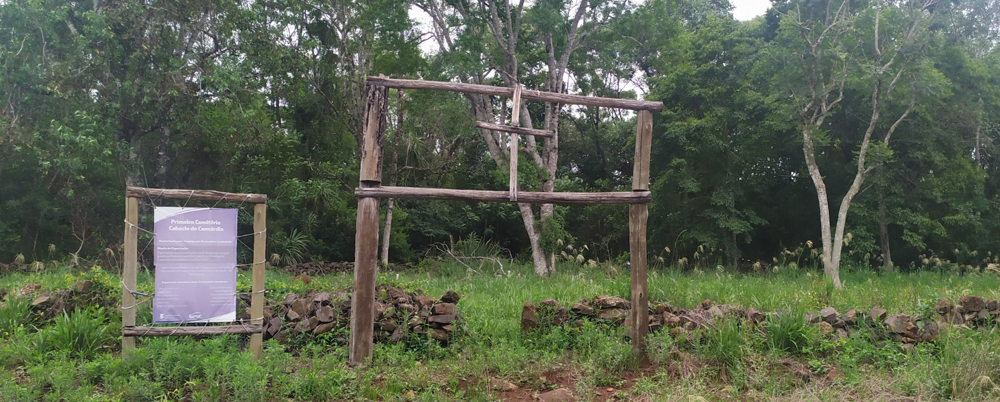

Um campo santo no IFC Campus Concórdia
Projeto de Pesquisa realizado por alunos do ensino médio técnico da Instituição se aprofunda na história deste local.
No coração do Instituto Federal Catarinense Campus Concórdia (IFC), um grupo de alunos e professores, uma vez que souberam da existência de um cemitério antigo nas dependências da Instituição, decidiram se aprofundar sobre a história que paerava sobre aquele local. Por meio de entrevistas com moradores do bairro, fez-se possível uma apuração de depoimentos com objetivo de entender como a comunidade funcionava e o porquê daquele cemitério estar localizado lá.
Cemitério Caboclo
O cemitério caboclo está geograficamente localizado dentro das terras do Instituto Federal Catarinense Campus Concórdia. Antes dele, havia um cemitério em Lageado dos Pintos, que posteriormente foi destruído pela água. Após o ocorrido, a Instituição cedeu terra legalmente para que os moradores construíssem o cemitério, com apoio da prefeitura.
 Fotografia do cemitério capturada em 2020. Imagem Autoral
Após a construção do novo cemitério em Fragosos, algumas famílias queriam transladar seus entes falecidos para o novo, uma vez que melhor localizado e assim o fizeram. O cemitério dentro do Instituto era grande, mas de difícil acesso, por conta das estradas precárias.
Há cerca de 50 pessoas enterradas no cemitério caboclo, com destaque ao sepulcro de Coronel Fragoso. Seu túmulo tem pedras que imitam o formato do bordado de sua patente militar, característica da farda que ele honrava. A espada do coronel atualmente se encontra no museu municipal de Concórdia.
Sobre o blog
Para divulgar os resultados do projeto “Cemitério Caboclo”, elegeu-se o formato de um blog contendo textos escritos a partir das informações encontradas nas entrevistas realizadas e algumas imagens. Os textos foram escritos por estudantes que participaram da terceira etapa do projeto. Consta, também a entrevista, na íntegra, de Lorena Salete Lopes do Amaral Tibes. Consultora Educacional e Bióloga, da Terceira Geração de Netos do Coronel Miguel Soares Fragosos: (Trineta). O turismólogo Júlio Gomes traz para nós uma biografia do Coronel Miguel Domingos Soares Fragoso. Ainda faz parte do material à disposição nesse blog um artigo denominado “Caboclo”, escrito por José Carlos Radin e Gentil Corazza. Julga-se apropriado a inserção da clara e completa abordagem sobre quem são esses elementos chamados genericamente de “caboclos” e que se encontram inseridos na história do Oeste catarinense.
Maria Denise Bortolini - Coordenadora da Etapa III do Projeto Cemitério Caboclo.O Projeto e sua metodologia.
O projeto desenvolvido por docentes, técnicos e discentes do Instituto Federal Catarinense IFC – Concórdia, teve por objeto resgatar informações e documentos referentes ao Cemitério Caboclo, patrimônio tombado pelo Município de Concórdia, no ano de 2005 e que fica geograficamente dentro dos limites da área do IFC Campus Concórdia
O referido trabalho procurou levantar objetos e fontes documentais que construam a história do cemitério, bem como realizou entrevistas com moradores antigos das comunidades do entorno do IFC Campus Concórdia, na perspectiva de levantar fontes orais que possibilitassem remontar a história desse cemitério. Em duas primeiras etapas foram realizadas levantamento bibliográfico e busca de documentos referentes à comunidade de Fragosos, e abordagens sobre o Coronel Fragoso que dá nome à comunidade e cuja história está diretamente ligada à existência do referido Cemitério Caboclo. Na terceira etapa, foram realizadas entrevistas semiestruturadas, gravadas e transcritas segundo parâmetros da análise conversacional. Nesse sentido, pessoas com ligação ao Colégio Agrícola e moradores das comunidades lindeiras exerceram um papel indispensável no momento da reconstrução oral, por meio de depoimentos que representaram a passagem de gerações, a construção da comunidade e o entrelaçamento com a história do município de Concórdia.
Nesse sentido, o projeto buscou resgatar informações orais a contribuir no levantamento histórico sobre o local, com a intenção de registrar e arquivar conhecimento da sua história. Assim, desenvolveu-se uma pesquisa com base na história oral, associando-a com a transcrição conversacional, na área da etnolinguística, com o intuito de levantar a fala dos moradores locais. Ainda, reitera-se a importância e relevância para a história e cultura local desse resgate, que será um ponto de partida para ações que possam levar a história do cemitério caboclo ao acesso da comunidade concordiense.
Como etapa final do projeto, um grupo de estudantes realizou o que ficou denominado de construção de quadros de ocorrências, onde diversos temas previamente eleitos foram buscados dentro das entrevistas anteriormente transcritas. A partir desta busca, foram escritos textos sobre assuntos diversos como brincadeiras de infância, namoro e casamento, colégio agrícola e, principalmente sobre o cemitério caboclo e a história da comunidade de Fragosos.
A distância do tempo presente e os acontecimentos buscados através do projeto foi um dos principais problemas detectados. Muitos temas continuam envoltos pelas brumas do tempo decorrido entre os acontecimentos e o tempo atual. Mesmo assim, o exercício da memória traz para o nosso tempo importantes reflexões sobre o passado e a reconstrução possível da história do cemitério caboclo e da comunidade de Fragosos a partir dos relatos dos entrevistados.